Ekonomi Keuangan Internasional (ECEU603002) — Pertemuan 9
September 2026
Definisi paling sederhana (J. A. Frankel and Rose 1996): depresiasi nominal lebih dari 25% dalam setahun, dan minimal 10 poin persentase lebih cepat dibanding tahun sebelumnya. Syarat kedua mencegah negara berinflasi tinggi kronis tercatat “krisis” tiap tahun.
Cacat seriusnya:
Ia hanya mencatat serangan spekulatif (speculative attack) yang berhasil menjatuhkan peg — ketika pasar beramai-ramai melepas rupiah dan bank sentral menyerah.
Inggris 1992 menaikkan bunga 10% → 12% dalam sehari dan tetap kalah: tercatat.
Negara yang diserang, kehilangan sepertiga cadangan, tetapi pegnya selamat: tidak tercatat. Padahal keduanya krisis.
Kalau hanya melihat kurs, serangan yang berhasil dilawan tidak terlihat. Maka lihat ketiganya (Eichengreen, Rose, and Wyplosz 1995):
Depresiasi kurs — tekanan yang dibiarkan lewat ke harga.
Cadangan devisa — tekanan yang diserap dengan menjual dolar.
Diferensial suku bunga — tekanan yang diserap dengan menaikkan bunga.
Ketiganya saling menggantikan:
Menahan kurs berarti cadangan turun, bunga naik, atau keduanya.
Membiarkan kurs bergerak menghemat cadangan dan bunga.
Karena itu satu indikator saja selalu menyesatkan.
Kurs, cadangan devisa bruto, dan diferensial suku bunga terhadap AS, bulanan 1995-2001. Garis putus-putus: 14 Agustus 1997, Januari 1998, Mei 1998. Sumber: BIS, FRED.
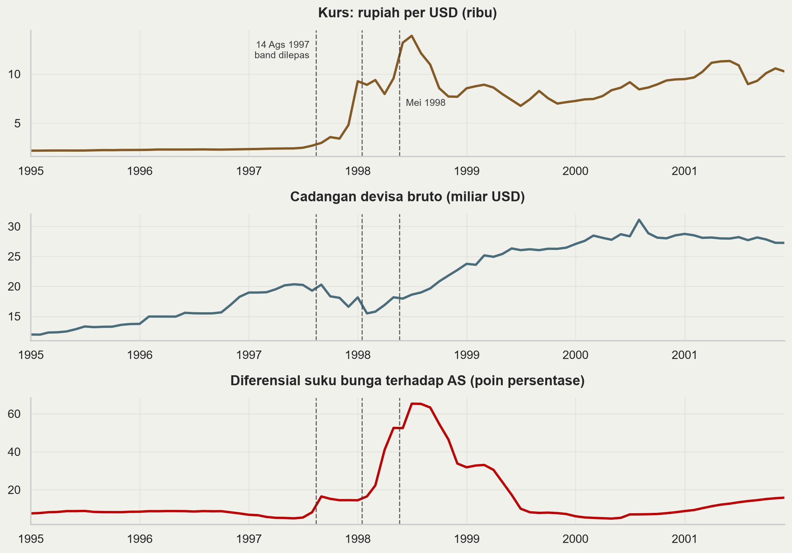
Ketiga deret tenang sampai Juli 1997. Tidak ada peringatan dini dari satu pun indikator.
Indonesia tidak membela dengan membakar cadangan: band dilepas 14 Agustus 1997. Cadangan bruto hanya turun dari 20,2 ke 16,6 miliar USD.
Tekanan muncul di kurs (2,4 → 15,3 ribu per USD) lalu di bunga (diferensial memuncak 65 poin persentase, Juli 1998).
Meksiko 1994 dan Argentina 2001 nanti menunjukkan pola terbalik: kurs datar, cadangan terkuras.
Catatan: cadangan bruto ditopang pencairan IMF sejak November 1997. Posisi neto jauh lebih buruk.
Neraca bank sentral yang disederhanakan:
| Aset | Kewajiban |
|---|---|
| Cadangan devisa \(R\) | Uang primer \(M\) |
| Kredit domestik \(D\) |
\[ M = R + D \]
\(M\) uang primer, \(R\) cadangan devisa, \(D\) kredit domestik (klaim atas pemerintah dan perbankan). Identitas akuntansi, selalu berlaku.
Membela peg tanpa sterilisasi. Masyarakat menyetor rupiah, menarik dolar. \(R\) turun; rupiah keluar dari peredaran sehingga \(M\) turun; \(D\) tetap.
Likuiditas rupiah mengetat, suku bunga domestik naik.
Bunga naik membuat rupiah lebih menarik dipegang, sehingga arus keluar mereda dengan sendirinya.
Harganya: kredit seret, ekonomi melambat. Ini trilemma — kurs tetap ditambah modal bebas berarti suku bunga bukan lagi milik Anda.
Sterilisasi. Bank sentral menyuntikkan kembali rupiah yang tersedot, dengan membeli SBN atau memberi pinjaman ke perbankan. \(D\) naik sebesar turunnya \(R\), sehingga \(M\) tetap.
| \(R\) | \(D\) | \(M\) | Bunga domestik | |
|---|---|---|---|---|
| Awal | 100 | 50 | 150 | — |
| Intervensi 10, tanpa sterilisasi | 90 | 50 | 140 | naik |
| Intervensi 10, dengan sterilisasi | 90 | 60 | 150 | tetap |
Cadangan terkuras sama saja. Yang berubah hanya konsekuensi moneternya.
Mengapa ada tanggal kedaluwarsa:
Bunga tidak naik, jadi insentif menukar rupiah ke dolar tidak berkurang dan kuras berlanjut dengan laju yang sama. Sterilisasi meniadakan mekanisme koreksi yang tadi bekerja.
Ulangi sepuluh kali: \(R = 0\), \(D = 150\), \(M = 150\).
\(R \geq 0\) dan stoknya terbatas, sehingga tanggal habisnya dapat dihitung siapa pun, termasuk spekulan. Itulah \(t_0\) di Bagian 2.
Sterilisasi memadai untuk guncangan sementara. Untuk tekanan persisten, hasilnya ditentukan aritmetika di atas.
Cadangan habis. Pemerintah membiayai defisit dengan mencetak uang; \(D\) tumbuh, \(R\) terkuras sampai nol.
Membela jadi terlalu mahal. Cadangan masih ada, tetapi suku bunga yang diperlukan menimbulkan pengangguran dan beban utang yang tak tertanggungkan. Pemerintah memilih melepas.
Neraca swasta hancur lebih dulu. Perusahaan berutang dolar tetapi berpendapatan rupiah. Depresiasi kecil pun membangkrutkan mereka, dan kebangkrutan itu memicu depresiasi berikutnya.
Ketiga jalur ini persis tiga generasi model krisis yang akan kita bahas.
| Generasi pertama | Generasi kedua | Generasi ketiga | |
|---|---|---|---|
| Rujukan | Krugman (1979); Flood and Garber (1984) | Obstfeld (1996) | Krugman (1999); Chang and Velasco (2001) |
| Pemicu | Defisit fiskal dimonetisasi | Trade-off kebijakan domestik | Mismatch mata uang & jatuh tempo |
| Peran pemerintah | Pasif, mekanis | Mengoptimalkan, bisa memilih | Penjamin implisit |
| Ekspektasi | Mengikuti fundamental | Membentuk hasil | Memperkuat kerusakan neraca |
| Dapat diprediksi? | Ya, tanggalnya bisa dihitung | Tidak, ada ekuilibrium ganda | Sebagian, lewat indikator neraca |
| Kasus tipikal | Amerika Latin 1970-80an, Meksiko 1994 | ERM 1992-93 | Asia 1997-98 |
| Obat yang disarankan | Disiplin fiskal | Kredibilitas, kurs fleksibel | Kelola mismatch, awasi neraca |
Ketiganya bukan saling menggantikan. Krisis nyata selalu campuran.
Logika intinya satu kalimat: defisit fiskal yang dibiayai dengan mencetak uang tidak kompatibel dengan kurs tetap.
Pemerintah defisit dan bank sentral membiayainya, sehingga kredit domestik \(D\) tumbuh dengan laju tetap \(\mu\).
Agar peg bertahan, uang primer \(M\) tidak boleh tumbuh. Dari \(M = R + D\), maka \(R\) harus turun dengan laju yang sama \(\mu\).
Cadangan menurun linear. Semua orang dapat menghitung kapan ia habis.
Butir 1 sampai 3 hanya aritmetika. Kesimpulan pentingnya ada di slide berikutnya.
Definisi. Kurs yang akan berlaku seandainya peg dilepas hari ini dan cadangan sudah nol — kurs mengambang yang konsisten dengan \(D\) saat itu.
Karena \(D\) terus tumbuh, shadow rate terus naik. Kurs resmi tertahan di \(\bar{E}\).
Shadow rate di bawah \(\bar{E}\): menyerang berarti membeli dolar di harga \(\bar{E}\) lalu memegang aset yang lebih rendah nilainya. Rugi, tidak ada yang menyerang.
Shadow rate melampaui \(\bar{E}\): menyerang berarti membeli dolar murah dan langsung untung. Semua menyerang, serentak.
Serangan terjadi tepat saat keduanya berpotongan.
Simulasi model generasi pertama. Kiri: cadangan devisa terhadap waktu. Kanan: kurs dan shadow rate. \(t^{*}\) saat serangan, \(t_0\) saat cadangan akan habis tanpa serangan.
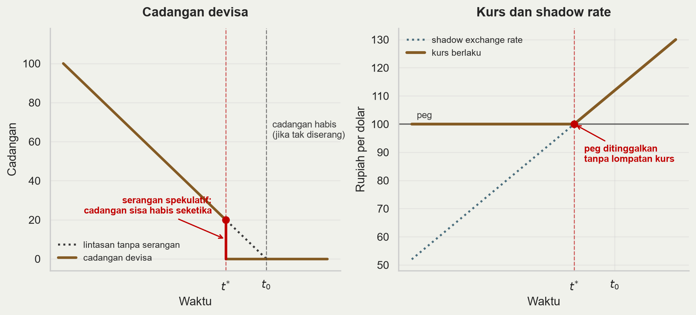
Argumennya: tidak boleh ada keuntungan tanpa risiko.
Andaikan peg baru runtuh pada \(t_0\), ketika cadangan nol. Maka kurs akan melompat dari \(\bar{E}\) ke tingkat yang jauh lebih lemah.
Lompatan itu dapat diantisipasi semua orang. Membeli dolar sedetik sebelum \(t_0\) memberi keuntungan besar tanpa risiko.
Maka semua membeli sedetik sebelumnya, yang memajukan keruntuhan. Argumen yang sama berlaku lagi, dan lagi.
Proses mundur ini berhenti hanya di titik yang tidak menghasilkan lompatan kurs: ketika shadow rate persis sama dengan \(\bar{E}\). Itulah \(t^{*}\).
Implikasinya: cadangan tersisa lenyap dalam hitungan jam, bukan bulan. Krisis tampak mendadak, padahal sepenuhnya deterministik.
Peso per USD (coklat, kiri) dan cadangan devisa dalam miliar USD (biru, kanan), 1993-1996. Sumber: BIS, FRED.
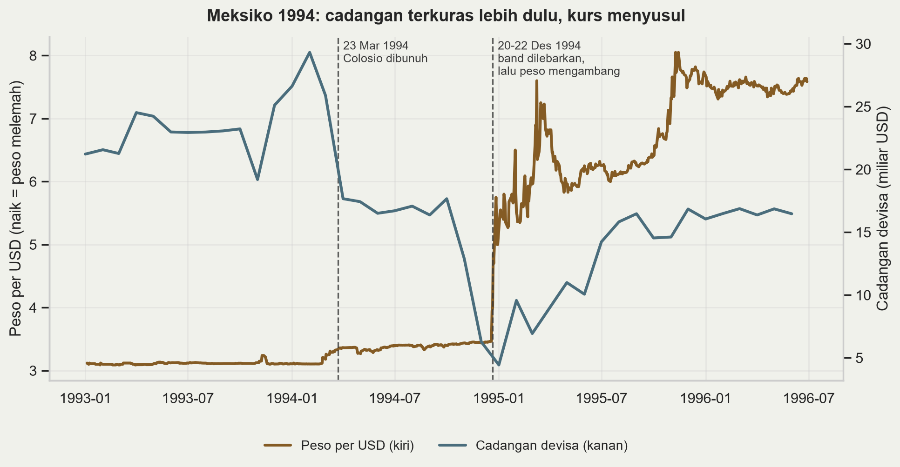
Sepanjang 1994 kurs praktis datar di dalam band, sementara cadangan anjlok dari USD 29 miliar ke bawah USD 6 miliar. Stabilitas dibayar dari cadangan, bukan dari kurs.
Ini sterilisasi yang tadi kita bahas, terlihat dalam data.
Utang peso diganti tesobonos — surat utang jangka pendek terindeks dolar. Beban riilnya melonjak begitu peso jatuh.
Guncangan politik: pemberontakan Chiapas (Januari), pembunuhan Colosio (Maret).
20 Desember band dilebarkan; dua hari kemudian peso mengambang, melemah dari 3,4 ke lebih dari 7 per dolar.
Calvo and Mendoza (1996) menyebutnya “a chronicle of a death foretold”.
Argumen ya:
Argumen tidak:
Defisit fiskal Meksiko tidak besar. Yang membengkak adalah defisit transaksi berjalan sekitar 7% PDB, dan itu didorong swasta.
Pembiayaannya bergantung arus modal portofolio yang bisa berbalik seketika — sudden stop, bukan monetisasi fiskal.
Ada unsur ekspektasi yang mewujudkan diri: tesobonos hanya jadi masalah jika peso jatuh.
Kesimpulan jujur: Meksiko 1994 adalah jembatan ke generasi berikutnya.
Model generasi pertama memperlakukan pemerintah sebagai robot: membela peg sampai cadangan terakhir, lalu menyerah.
Pemerintah sungguhan tidak begitu. Inggris 1992 masih punya cadangan dan akses pinjaman ketika keluar dari ERM.
Ia memilih keluar.
Obstfeld (1996) mengganti robot itu dengan pihak yang mengoptimalkan. Hasilnya berubah mendasar.
Biaya mempertahankan peg naik seiring ekspektasi devaluasi:
Lewat UIP: jika pasar mengharapkan depresiasi \(E^e\), suku bunga domestik harus naik kira-kira sebesar itu untuk menahan modal.
Bunga tinggi berarti investasi turun, pengangguran naik, beban utang pemerintah membengkak, neraca bank memburuk.
Biaya melepas peg relatif tetap:
Pemerintah melepas ketika biaya mempertahankan melampaui biaya melepas. Yang menentukan adalah ekspektasi pasar, dan itu bukan variabel eksogen.
Simulasi. Sumbu datar: ekspektasi devaluasi (%). Sumbu tegak: biaya bagi pemerintah. Coklat = biaya mempertahankan peg, merah = biaya melepasnya. Yang berbeda antarpanel hanya kekuatan fundamental.
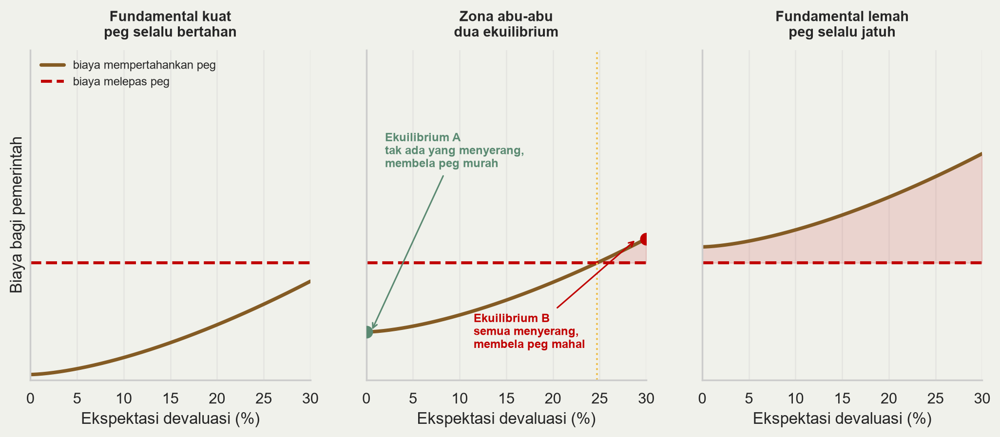
Fundamental kuat (kiri): mempertahankan lebih murah daripada melepas, bahkan jika seluruh pasar menyerang. Serangan tidak pernah berhasil, jadi tidak ada yang menyerang. Satu ekuilibrium.
Fundamental lemah (kanan): mempertahankan lebih mahal bahkan ketika tidak seorang pun menyerang. Peg jatuh tanpa perlu spekulan. Satu ekuilibrium.
Zona abu-abu (tengah): dua ekuilibrium, keduanya konsisten secara internal.
Fundamental tidak berubah di antara keduanya. Yang berubah hanya keyakinan.
Di zona abu-abu, krisis tidak dapat diprediksi secara prinsipil. Bukan karena data kurang, melainkan karena modelnya memang tidak menentukan hasil.
Escape clause: kurs tetap yang boleh dilepas dalam keadaan buruk memberi fleksibilitas, tetapi justru karena itu kurang kredibel dan lebih mudah diserang.
Penularan jadi masuk akal. Krisis Thailand dapat memindahkan negara lain dari ekuilibrium A ke B tanpa ada yang berubah pada fundamentalnya.
Kritik utamanya jelas: teori yang membolehkan segala hasil sesungguhnya tidak meramalkan apa pun.
Exchange Rate Mechanism, inti European Monetary System sejak 1979, dan jalan menuju euro.
Tetap tapi dapat disesuaikan. Tiap mata uang punya paritas pusat dan wajib bergerak dalam pita ±2,25% — ±6% untuk sebagian anggota, termasuk Inggris.
Kewajiban dua arah. Saat sebuah mata uang menyentuh tepi pita, bank sentral negara lemah dan negara kuat sama-sama wajib intervensi. Di atas kertas tanpa batas.
Mark Jerman jangkarnya. Secara de facto Bundesbank menentukan kebijakan moneter seluruh sistem. Inilah sumber masalah 1992.
Inggris masuk Oktober 1990 pada 2,95 mark per pound, keluar 16 September 1992.
Setelah krisis 1992-93 pita dilebarkan ke ±15% (Agustus 1993), praktis mengosongkan maknanya. ERM II masih dipakai calon pengguna euro.
Atas: pound per USD, harian (naik = pound melemah). Bawah: suku bunga pasar uang Inggris, rata-rata bulanan. Garis putus-putus: 16 September 1992. Sumber: BIS, FRED.
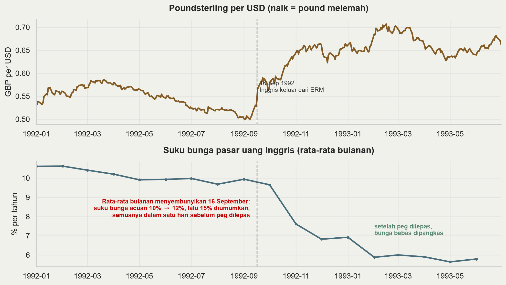
Paritas masuk 2,95 mark per pound banyak dinilai terlalu kuat, dengan inflasi Inggris lebih tinggi daripada Jerman.
Reunifikasi Jerman memaksa Bundesbank menaikkan bunga. Lewat peg, kebijakan itu diimpor ke seluruh ERM, termasuk Inggris yang sedang resesi. Ini trilemma: kurs tetap ditambah modal bebas berarti tidak ada kebijakan moneter independen.
16 September 1992: bunga acuan naik 10% → 12%, lalu 15% diumumkan, semuanya dalam satu hari. Sore itu Inggris keluar dari ERM; kenaikan ke 15% tak pernah berlaku.
Pound melemah sekitar 18% terhadap dolar dalam tiga bulan. Soros dilaporkan meraih sekitar USD 1 miliar.
Sebelum 16 September, bunga Inggris tertahan sekitar 10% demi peg, bukan karena kebutuhan domestik.
Setelah keluar dari ERM, bunga turun ke sekitar 6% dalam beberapa bulan, dan ekonomi Inggris pulih lebih cepat daripada tetangganya yang bertahan.
Melepas peg memberi manfaat yang persis diprediksi model generasi kedua. Inggris tidak kehabisan cadangan; ia memutuskan harga bertahan terlalu mahal.
Komitmen Bundesbank juga punya batas: kewajiban intervensinya tak terbatas di atas kertas, tetapi membeli pound berarti mencetak mark, sehingga ia menolak menjalankannya sampai habis.
Keruntuhan adalah keputusan, bukan kehabisan cadangan.
Keberatan terhadap ekuilibrium ganda: modelnya tidak menentukan hasil, sehingga sulit diuji.
Asumsi diam-diam Obstfeld: semua spekulan mengetahui hal yang sama persis tentang fundamental.
Morris and Shin (1998) melonggarkan itu — tiap spekulan diberi sinyal pribadi yang sedikit berbeda — dan ekuilibrium ganda runtuh menjadi satu.
Ada nilai fundamental ambang yang unik: di atasnya peg selalu bertahan, di bawahnya selalu jatuh.
Konsekuensi kebijakan: transparansi dan komunikasi bank sentral jadi variabel yang menentukan, karena yang berperan adalah struktur informasi pasar.
Pertanyaan untuk kelas:
Inggris masuk ERM pada paritas yang diperdebatkan terlalu kuat, dengan inflasi lebih tinggi daripada Jerman. “Fundamental lemah” atau sekadar “zona abu-abu”?
Jika fundamentalnya memang lemah, apakah 1992 justru kasus generasi pertama yang menyamar?
Bagaimana membedakannya secara empiris, jika di zona abu-abu keduanya menghasilkan keruntuhan yang tampak sama?
Memisahkan “fundamental buruk” dari “ekspektasi buruk” adalah masalah identifikasi yang belum terselesaikan.
Menjelang 1997, Asia Timur menunjukkan:
Surplus atau defisit fiskal sangat kecil — bukan monetisasi defisit, sehingga generasi pertama tidak berlaku.
Inflasi rendah, pertumbuhan 7-8% per tahun selama satu dekade, pengangguran rendah, tabungan tinggi.
Tidak ada trade-off pengangguran-versus-peg, sehingga generasi kedua juga kurang pas.
Bank Dunia baru menerbitkan The East Asian Miracle pada 1993.
Namun antara Juli 1997 dan Juni 1998 rupiah kehilangan lebih dari 80% nilainya. Kedua model tidak dapat menjelaskan itu.
Yang tidak dilihat kedua model sebelumnya: komposisi kewajiban sektor swasta.
Currency mismatch: berutang dolar, berpendapatan rupiah. Depresiasi menaikkan nilai kewajiban tanpa menaikkan nilai aset.
Maturity mismatch: utang jangka pendek membiayai proyek jangka panjang. Perpanjangan harus terus diminta, dan penolakan bersifat serentak.
Original sin (Eichengreen, Hausmann, and Panizza 2007): negara berkembang umumnya tidak dapat meminjam ke luar dalam mata uangnya sendiri. Mismatch ini struktural, bukan kesalahan manajerial.
Akibatnya kurs berhenti menjadi sekadar harga relatif. Ia menjadi variabel neraca.
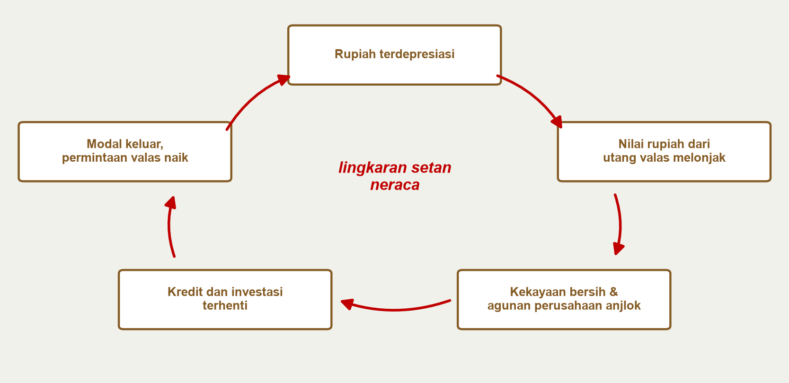
Setiap kotak adalah akibat dari kotak sebelumnya; panah merah menutup lingkaran kembali ke depresiasi.
Dalam IS-LM-FX yang sudah kita kuasai, depresiasi bersifat ekspansioner: menaikkan \(NX\), menggeser IS ke kanan, menaikkan output.
\[ Y = C + I(q) + G + NX(q), \qquad \frac{\partial NX}{\partial q} > 0, \quad \frac{\partial I}{\partial q} < 0 \]
di mana \(q\) adalah kurs riil dan kenaikan \(q\) berarti depresiasi riil.
Saluran kedua itulah yang baru: depresiasi menaikkan nilai rupiah dari utang valas, menurunkan kekayaan bersih dan agunan, sehingga investasi jatuh.
Jika utang valas cukup besar, saluran neraca mengalahkan saluran perdagangan dan \(\partial Y / \partial q < 0\).
Depresiasi menjadi kontraksioner. Inilah sebabnya resep “biarkan kurs menyesuaikan” gagal di Indonesia pada 1998.
Literatur generasi ketiga terbelah dua soal mengapa mismatch menumpuk.
Rush ke likuiditas (Chang and Velasco 2001):
Perbankan menjalankan transformasi jatuh tempo dengan pendanaan luar negeri jangka pendek.
Tercipta ekuilibrium ganda ala bank run, tetapi pelakunya kreditur asing. Jika semua menolak memperpanjang, semua benar untuk menolak. Tidak perlu ada kesalahan kebijakan.
Moral hazard (Corsetti, Pesenti, and Roubini 1999):
Jaminan pemerintah yang implisit membuat utang valas dinilai terlalu murah.
Modal mengalir ke proyek berimbal hasil rendah dan berisiko tinggi. Krisis adalah saat pasar menyadari jaminan itu tak mungkin ditepati.
Bedanya bukan akademis: yang pertama menuntut pemberi pinjaman terakhir internasional, yang kedua menuntut pembersihan dan reformasi. IMF 1997 bertindak seolah diagnosisnya yang kedua.
Calvo (1998) menyorot sisi arus modalnya. Ingat identitas neraca pembayaran:
\[ CA + FA = 0 \]
di mana \(CA\) saldo transaksi berjalan dan \(FA\) saldo neraca finansial.
Defisit transaksi berjalan 5% PDB dibiayai arus masuk modal 5% PDB.
Jika arus itu berhenti — bukan berbalik, hanya berhenti — transaksi berjalan harus bergerak ke nol dalam hitungan bulan.
Penyesuaian sebesar itu hanya lewat dua saluran: depresiasi riil besar dan kontraksi impor tajam. Keduanya berarti resesi.
Poinnya: defisit transaksi berjalan berbahaya bukan karena besarnya, melainkan karena cara pembiayaannya.
G. L. Kaminsky and Reinhart (1999) memeriksa 76 krisis nilai tukar dan 26 krisis perbankan:
Krisis perbankan dan krisis nilai tukar berkorelasi erat, tetapi tidak simetris.
Krisis perbankan biasanya mendahului krisis nilai tukar, lalu krisis nilai tukar memperdalam krisis perbankan.
Mekanismenya: masalah perbankan memaksa bank sentral menyuntik likuiditas, yang tidak konsisten dengan peg; setelah peg pecah, mismatch mata uang membangkrutkan bank yang tersisa.
Krisis kembar jauh lebih mahal daripada masing-masingnya sendirian.
Inilah alasan kuliah krisis keuangan berikutnya adalah kelanjutan langsung, bukan topik terpisah.
Indeks kurs terhadap USD, harian, 30 Juni 1997 = 100. Naik = mata uang melemah. Sumber: BIS.
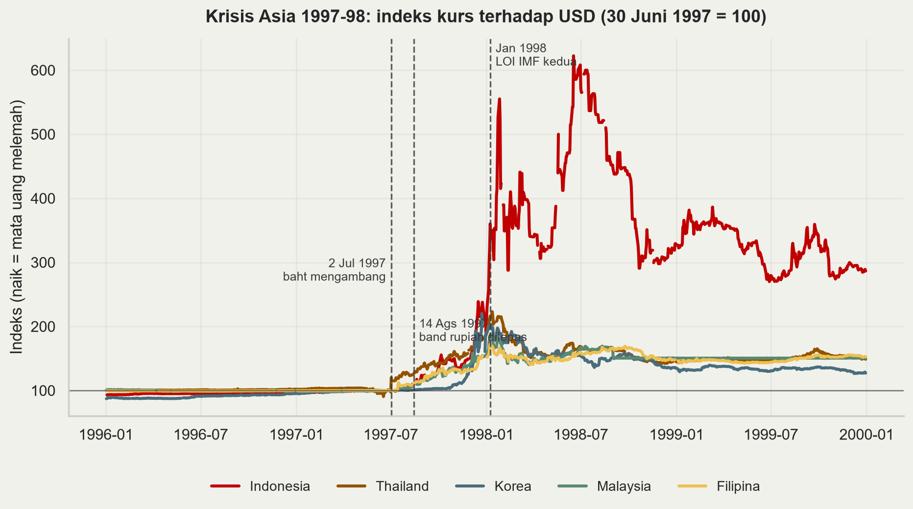
2 Juli 1997 Thailand melepas baht setelah cadangannya habis dipakai membela.
14 Agustus 1997 Indonesia menghapus band dan membiarkan rupiah mengambang. Saat itu dipuji sebagai langkah proaktif.
1 November 1997 enam belas bank ditutup tanpa skema penjaminan yang jelas, memicu penarikan dana dari bank swasta lain.
Januari 1998 LOI kedua dengan IMF. Rupiah menembus 10.000 per dolar.
Mei 1998 krisis politik. Puncak kurs pertengahan Juni 1998 sekitar 15.250 per dolar, dari 2.445 pada Juni 1997 — turun 84% nilainya.
Empat mata uang lain melemah 72-123% pada puncaknya. Rupiah jauh lebih dalam, dan pulih jauh lebih lambat.
Cadangan devisa (biru) dan utang luar negeri jangka pendek (merah), miliar USD. Sumber: World Bank WDI.
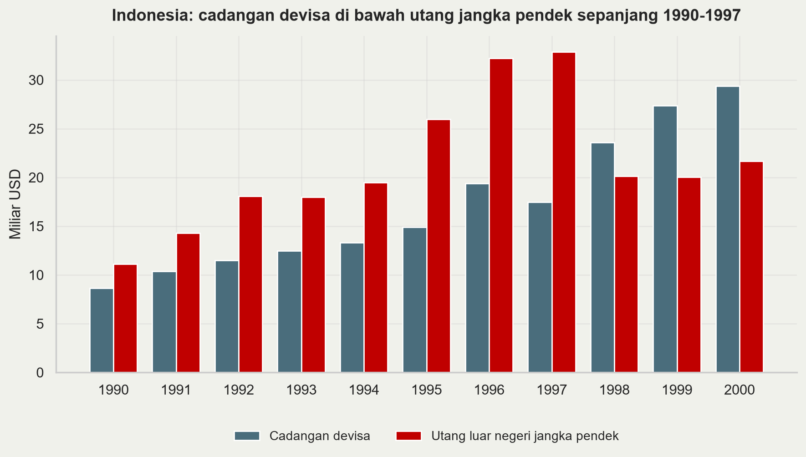
Pada 1996: cadangan USD 19,4 miliar melawan utang jangka pendek USD 32,2 miliar — rasio 0,60. Pada 1997 turun ke 0,53.
Rasio 0,60 berarti: jika seluruh kreditur jangka pendek menolak memperpanjang serentak, Indonesia hanya mampu membayar 60% dari mereka.
Ini persis struktur bank run. Dalam Chang and Velasco (2001), struktur seperti ini cukup menciptakan ekuilibrium “semua lari” tanpa perlu ada yang salah pada fundamental lain.
Sebagian besar adalah utang korporasi swasta yang tidak dipantau terpusat. Pemerintah baru tahu besaran sebenarnya setelah krisis berjalan.
Tidak ada indikator fiskal konvensional yang menangkap risiko ini. Rasio utang pemerintah terhadap PDB Indonesia 1996 tergolong rendah.
Pelajarannya: yang penting bukan besarnya utang, melainkan siapa yang berutang, dalam mata uang apa, dan berapa lama jatuh temponya.
Pertumbuhan PDB riil dan inflasi IHK tahunan (kiri, tengah) serta suku bunga pasar uang bulanan (kanan), 1993-2003, persen per tahun. Sumber: World Bank WDI, FRED.
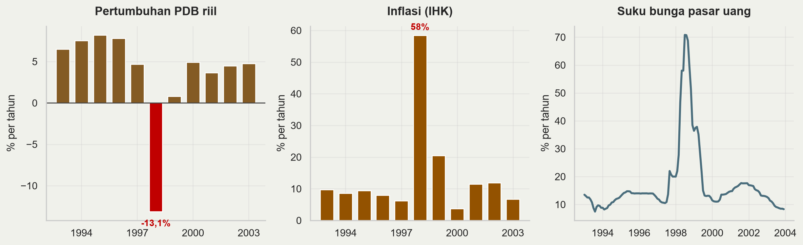
PDB riil −13,1%, inflasi 58,5%, bunga pasar uang memuncak 70,8%. Biaya rekapitalisasi perbankan diperkirakan melebihi 50% PDB (Enoch et al. 2001; Laeven and Valencia 2020).
| Negara | Respons | Hasil jangka pendek |
|---|---|---|
| Indonesia | Program IMF, bunga sangat tinggi, 16 bank ditutup tanpa penjaminan | Kontraksi terdalam, krisis politik |
| Korea | Program IMF, ditambah perpanjangan utang bank yang dikoordinasi kreditur | Pulih relatif cepat |
| Thailand | Program IMF, konsolidasi fiskal | Pemulihan lambat tapi stabil |
| Malaysia | Menolak IMF, kontrol modal dan mematok ringgit (Sep 1998) | Pemulihan setara, tanpa program IMF |
Perbedaan hasil ini menjadi inti perdebatan yang belum selesai.
Radelet and Sachs (1998): ini kepanikan likuiditas, bukan kebangkrutan. Bunga tinggi dan konsolidasi fiskal memperdalam resesi dan menghancurkan neraca yang hendak diselamatkan. Yang dibutuhkan perpanjangan utang terkoordinasi.
Furman and Stiglitz (1998): bukti empiris tidak mendukung bahwa bunga sangat tinggi menstabilkan kurs di negara dengan korporasi rapuh. Justru sebaliknya.
Posisi IMF: kelemahan struktural dan tata kelola memang ada; tanpa reformasi kepercayaan tidak kembali. Bunga tinggi diperlukan untuk menghentikan pelarian modal.
Penilaian retrospektif IMF kemudian mengakui pengetatan fiskal awal terlalu keras dan penutupan bank Indonesia salah kelola.
Saya tidak memberi kesimpulan di sini. Isu ini masih politis, dan Bapak/Ibu punya cukup bekal untuk menimbangnya sendiri.
Pendekatan sinyal (G. Kaminsky, Lizondo, and Reinhart 1998): pantau banyak indikator; sebuah indikator “memberi sinyal” jika melewati ambangnya; urutkan berdasarkan rasio derau terhadap sinyal.
Evaluasi lintas krisis (J. Frankel and Saravelos 2012): dari puluhan indikator yang pernah diusulkan, hanya dua yang konsisten berguna — tingkat cadangan devisa relatif terhadap kewajiban jangka pendek, dan overvaluasi nilai tukar riil.
Yang tidak konsisten memprediksi: defisit transaksi berjalan, pertumbuhan, posisi fiskal, keterbukaan perdagangan.
Perhatikan kaitannya dengan teori: yang bertahan persis variabel kunci generasi pertama dan ketiga. Yang gugur adalah fokus generasi kedua — sebab di sana hasil memang tidak ditentukan.
Rasio cadangan devisa terhadap utang luar negeri jangka pendek, 1996 (merah) versus 2024 (biru). Garis putus-putus: aturan Greenspan-Guidotti, rasio 1. Sumber: World Bank WDI.
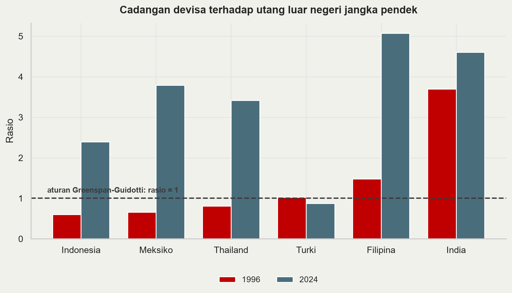
Pada 1996, Indonesia (0,60), Meksiko (0,64) dan Thailand (0,80) semuanya di bawah 1 — dan ketiganya mengalami krisis.
Pada 2024 ketiganya jauh di atas 1: Indonesia 2,4, Thailand 3,4, Meksiko 3,8. Ini penumpukan cadangan pasca-krisis, asuransi mandiri yang dibeli Asia setelah 1998.
Turki satu-satunya yang memburuk, dari sekitar 1,0 ke 0,87. Kita kembali ke Turki dua slide lagi.
Asuransi ini tidak gratis: cadangan berimbal hasil rendah sementara negara meminjam lebih mahal. Selisihnya biaya tahunan untuk menghindari pengulangan 1998.
Trilemma yang sudah kita pelajari: dari kurs tetap, modal bebas, dan moneter independen, hanya dua yang bisa dipilih.
Rey (2015): dengan siklus keuangan global, pilihan itu lebih sempit lagi. Kondisi keuangan global menjalar ke semua negara, termasuk yang kursnya mengambang.
Maka kurs mengambang tidak cukup mengisolasi ekonomi domestik.
Trade-off sesungguhnya adalah dilemma: moneter independen atau modal bebas, titik. Rezim kurs hanya mengubah bentuk penyesuaian.
Konsekuensinya: pengelolaan arus modal dan makroprudensial menjadi bagian sah dari kotak perkakas, bukan penyimpangan.
Integrated Policy Framework (International Monetary Fund 2020; Basu et al. 2020) menolak resep tunggal: bauran optimal bergantung pada kondisi awal sebuah negara.
| Instrumen | Paling berguna ketika |
|---|---|
| Suku bunga kebijakan | Ekspektasi inflasi terjangkar, mismatch neraca kecil |
| Intervensi valas | Pasar valas dangkal, guncangan bersifat sementara |
| Capital flow management | Arus masuk deras dan berjangka pendek |
| Makroprudensial | Mismatch mata uang menumpuk di neraca swasta |
Bandingkan 1997, ketika resepnya seragam: naikkan bunga, perketat fiskal, biarkan kurs menyesuaikan.
Bagi ekonomi dengan utang valas swasta besar, resep itu memperkuat lingkaran setan neraca.
IMF merevisi Institutional View (International Monetary Fund 2022) untuk mengakui pengelolaan arus modal secara preventif.
Cadangan devisa adalah asuransi mandiri yang mahal. Alternatifnya asuransi bersama.
Swap lines bank sentral. The Fed membukanya pada 2008 dan 2020. Sangat efektif, tetapi aksesnya selektif dan tidak dijanjikan, jadi tidak bisa diandalkan sebagai rencana.
CMIM dan BSA ASEAN+3. Lahir langsung dari 1997-98. Kapasitasnya nyata, tetapi sebagian besar penarikan masih ditautkan pada program IMF.
Flexible Credit Line IMF. Jalur pencegahan untuk negara berfundamental kuat. Masalahnya stigma: memintanya bisa dibaca pasar sebagai sinyal bahaya.
Satu pertanyaan di balik ketiganya: bagaimana menyediakan likuiditas darurat tanpa menciptakan moral hazard yang memicu krisis berikutnya.
Peso per USD (coklat, kiri) dan cadangan devisa dalam miliar USD (biru, kanan), 1999-2003. Sumber: BIS, FRED.
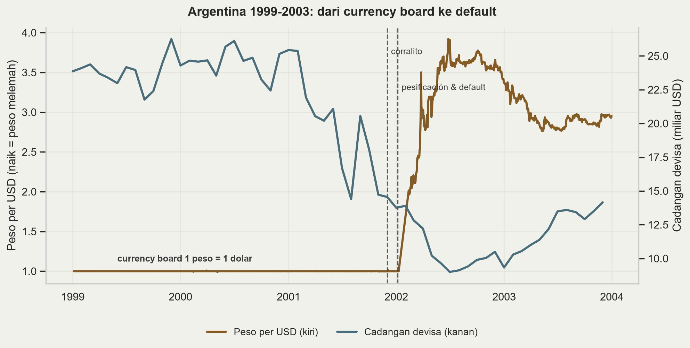
Sejak 1991 Argentina menjalankan currency board: satu peso sama dengan satu dolar, dijamin undang-undang. Bentuk komitmen paling kaku, sehingga seharusnya paling kredibel.
Pola yang sama dengan Meksiko: sepanjang 2001 kurs datar di 1,00 sementara cadangan anjlok dari USD 25 miliar ke sekitar USD 14 miliar. Kekakuan kurs menyembunyikan tekanan, tidak menghilangkannya.
Desember 2001: corralito, pembatasan penarikan simpanan. Menyusul gagal bayar sekitar USD 80-100 miliar.
Januari-Februari 2002: pesificación asimetris — utang bank dikonversi 1:1, simpanan 1,4:1. Peso mencapai hampir 4 per dolar.
Urutannya: krisis nilai tukar, krisis perbankan, krisis utang berdaulat, dalam hitungan minggu. Kuliah krisis utang melanjutkan dari titik ini.
Indeks kurs terhadap USD, bulanan, Januari 2018 = 100, skala logaritmik. Naik = mata uang melemah. Sumber: BIS.
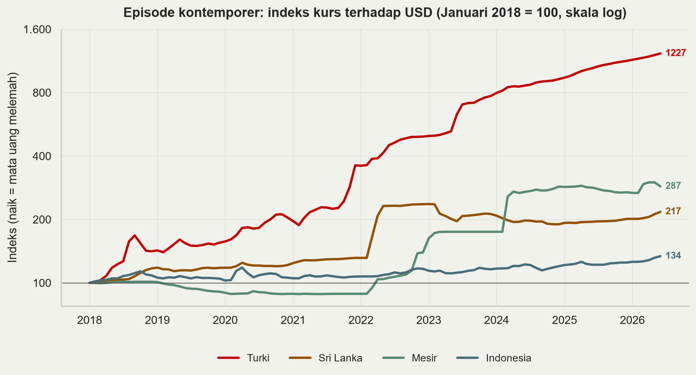
Turki paling ekstrem: indeks sekitar 1.227, artinya lira kehilangan sekitar 92% nilainya sejak 2018. Pemicunya penurunan suku bunga di tengah inflasi tinggi — kebalikan resep ortodoks. Skema deposito terlindung kurs (KKM) sejak akhir 2021 memindahkan risiko kurs ke neraca negara.
Sri Lanka pola klasik: kurs ditahan datar sampai awal 2022, lalu terjun ketika cadangan habis. Diikuti gagal bayar utang luar negeri — lagi-lagi nilai tukar lalu utang.
Mesir pola tangga: beberapa devaluasi terpisah, masing-masing setelah periode penahanan kurs.
Indonesia di 134 — melemah, tetapi berbeda ordo besarannya.
Ciri yang sama pada ketiga episode pertama: kurs ditahan lebih lama daripada yang didukung cadangan.
Rupiah per USD dalam ribuan (merah, kiri) dan cadangan devisa dalam miliar USD (cyan, kanan), bulanan, 2010-2026. Sumber: BIS, FRED.
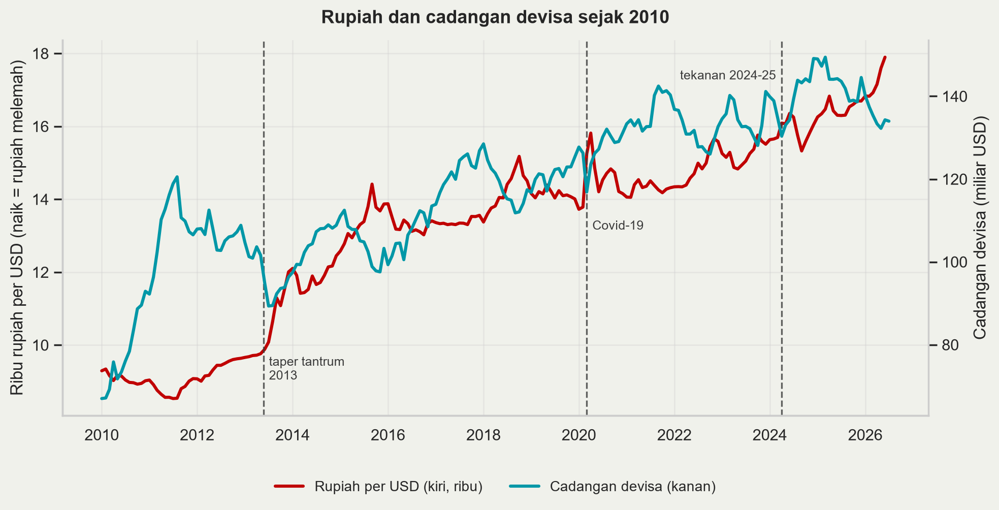
2013, taper tantrum. Indonesia masuk fragile five. Pemicunya eksternal murni, tetapi dalamnya tekanan ditentukan kerentanan domestik: defisit transaksi berjalan dan ketergantungan arus portofolio (Basri 2017).
2024-25. Rupiah tertekan seiring bunga AS tinggi dan ketidakpastian global. Respons BI: SRBI untuk menahan arus keluar, intervensi spot, DNDF dan SBN, serta retensi devisa hasil ekspor SDA (PP 8/2025).
Bandingkan 1996: rasio cadangan terhadap utang jangka pendek naik dari 0,60 ke sekitar 2,4; kurs mengambang, bukan dipatok; utang valas korporasi dipantau dan wajib lindung nilai.
Pertanyaan untuk kelas: dengan kerangka mana tekanan rupiah 2024-25 dinilai, dan apakah retensi devisa itu manajemen arus modal yang sah atau distorsi?
| Yang dijelaskan dengan baik | Yang dilewatkan | |
|---|---|---|
| Generasi pertama | Krisis berakar fiskal; mengapa keruntuhan mendadak meski fundamental terbaca | Krisis pada negara berfiskal sehat |
| Generasi kedua | Keruntuhan sebagai pilihan; penularan; mengapa kredibilitas bernilai | Daya prediksi; peran neraca |
| Generasi ketiga | Asia 1997; depresiasi kontraksioner; mengapa mata uang dan bank jatuh bersama | Pemicu; kapan lingkaran mulai |
Ketiganya melengkapi, bukan menggantikan.
Indonesia 1997-98 pada intinya generasi ketiga — mismatch neraca dan sudden stop — dengan unsur generasi kedua setelah Mei 1998, ketika ketidakpastian politik menggeser ekspektasi secara mandiri.
Krisis mendadak karena arbitrase, bukan karena kejutan. Keruntuhan yang dapat diantisipasi tidak bisa menjadi ekuilibrium.
Yang menentukan bukan besarnya utang, melainkan strukturnya: mata uang, jatuh tempo, dan siapa yang menanggungnya.
Depresiasi tidak selalu ekspansioner. Dengan utang valas besar ia kontraksioner, dan itu membalik intuisi IS-LM-FX.
Cadangan devisa dan overvaluasi riil adalah dua indikator peringatan dini yang bertahan dari puluhan yang diusulkan.
Tidak ada rezim kurs yang bebas biaya. Yang ada hanya pilihan di mana penyesuaian muncul: kurs, cadangan, suku bunga, atau output.
Krisis keuangan. Mengapa bank rentan secara bawaan (bank run, transformasi jatuh tempo), bagaimana penjaminan simpanan dan pemberi pinjaman terakhir bekerja, apa yang membuat 2008 berbeda. Sambungannya: twin crises (G. L. Kaminsky and Reinhart 1999) dan penutupan 16 bank November 1997.
Krisis utang. Mengapa negara berdaulat gagal bayar padahal tidak ada pengadilan yang bisa menyitanya, bagaimana restrukturisasi berjalan, apa itu debt intolerance. Sambungannya: Argentina 2001-02 dan Sri Lanka 2022.
Indonesia 1998 adalah ketiganya sekaligus. Itulah sebabnya ketiga kuliah ini satu kesatuan.